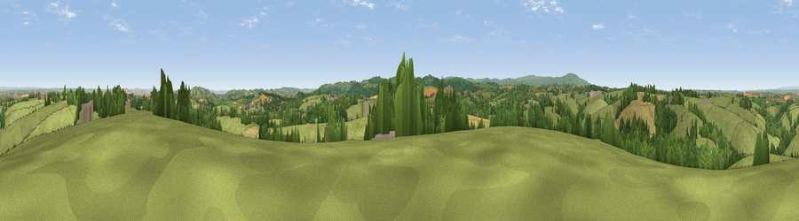

Crosshill
#10448 in England · top 15% of its area beats it · near Cheriton BishopThe view, rendered

A 360° render of this exact spot computed from the terrain model, tree cover and land cover — summer colours, afternoon light, calibrated against photographs of famous viewpoints. Real trees, hedges and buildings will differ in detail.
The panorama
Grey silhouette: terrain skyline in each direction (720 bearings, Earth curvature and refraction included). Dashed green: skyline with trees (+15 m) and buildings (+8 m) as obstacles. Blue strip: how far the ground is visible on each bearing.
Where the view opens
Wedge length = distance to the farthest visible ground on that bearing (vegetation-aware). Rings at 10, 25 and 50 km.
What fills the view
68% grassland · 19% woodland · 12% cropland ·
Angular shares of the visible panorama (visual magnitude), not map area. Landscape diversity 0.38 (0–1 Shannon).
Key numbers
More beautiful places nearby
The staircase of upgrades: each row has a higher view potential than everything closer. Driving times are estimates from straight-line distance, calibrated against real road routing — check an actual route before setting out.
| Place | Direction | Drive | Score |
|---|---|---|---|
| Viewpoint near Crockernwell | S · 4 km | ~10 min | 69.6 |
| Viewpoint near Venny Tedburn | NE · 5 km | ~11 min | 70.1 |
| Viewpoint near Moretonhampstead | S · 6 km | ~12 min | 74.8 |
| Viewpoint near Drewsteignton | SSW · 6 km | ~13 min | 75.1 |
| Butterdon Hill | SSW · 6 km | ~13 min | 76.4 |
| Viewpoint near Whitestone | E · 10 km | ~19 min | 79.8 |
| Viewpoint near Haytor Vale | S · 16 km | ~29 min | 80.1 |
| Viewpoint near Kenton | SE · 21 km | ~35 min | 80.7 |
50.73717, -3.75117 · source: dobih hill · position refined by local search. Computed location — check access rights before visiting.